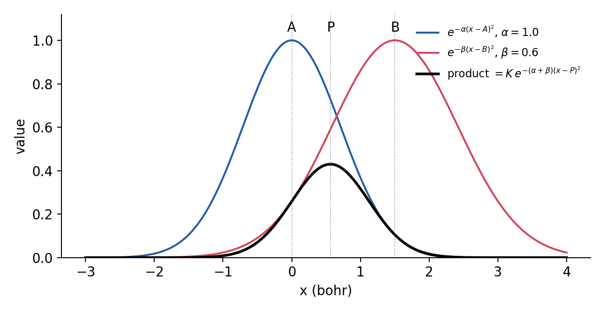
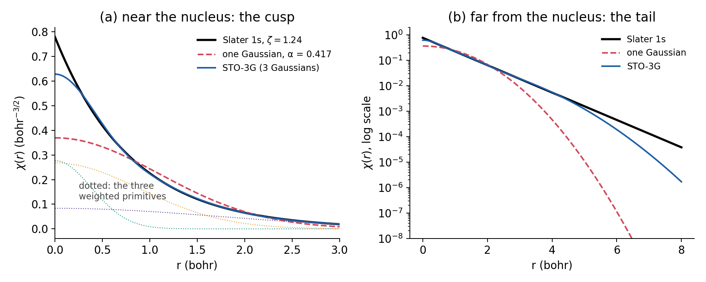
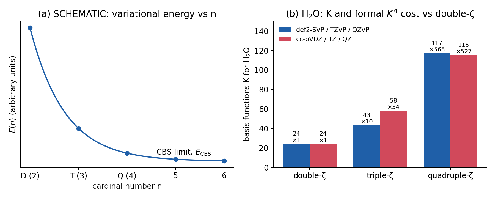

Lecture 2 · Approximating the wave function: basis sets
From LCAO to def2-QZVP: what basis functions are, how to read their names, and what they cost
1 Molecular orbitals from basis functions
1.1 The LCAO expansion
Lecture 1 ended with the first of the two approximations of every calculation: the orbitals are unknown functions of three coordinates, and a computer cannot store an arbitrary function. The solution is to write each molecular orbital \(\phi_i\) as a linear combination of a finite number \(K\) of known functions \(\chi_\mu\), the basis functions:
\[ \phi_i(\mathbf{r}) = \sum_{\mu=1}^{K} c_{\mu i}\, \chi_\mu(\mathbf{r}) . \tag{1}\]
The basis functions are fixed in advance; only the coefficients \(c_{\mu i}\) are optimized. In P-Chem 2 you met this as LCAO, the linear combination of atomic orbitals: for H₂⁺, one 1s function on each proton; for water, a 1s, 2s and three 2p functions on oxygen plus one 1s on each hydrogen, seven functions in total. Modern basis functions are not atomic orbitals in the strict sense (they are not eigenfunctions of any atom), but they are still centered on the atoms and look like atomic orbitals, so the name has stuck.
With Equation 1, the hard problem of finding unknown functions becomes the much easier problem of finding unknown numbers: a \(K \times K\) matrix of coefficients. In Hartree–Fock and Kohn–Sham DFT this leads to a matrix eigenvalue equation, the Roothaan–Hall equation \(\mathbf{FC} = \mathbf{SC}\boldsymbol{\varepsilon}\), which you will meet in Lecture 4. Here \(\mathbf{S}\) is the overlap matrix, \(S_{\mu\nu} = \int \chi_\mu^* \chi_\nu \, d\mathbf{r}\). Basis functions on different atoms overlap, so \(\mathbf{S}\) is not the identity matrix; §13.2 of the P-Chem 2 textbook shows it for water.
\(K\) basis functions give exactly \(K\) molecular orbitals. Of these, \(N/2\) are occupied in a closed-shell molecule with \(N\) electrons; the rest are virtual (unoccupied) orbitals. The number of basis functions \(K\) is printed in every Q-Chem output and is one of the four numbers you record in Experiment 1.
1.2 The variational principle and the CBS limit
If the set \(\{\chi_\mu\}\) were complete, any function could be expanded exactly in it, and Equation 1 would be no approximation at all. A complete set is infinite, so any real basis is a truncation. The orbitals can only take the shapes that the chosen functions allow.
The variational principle of Lecture 1 tells us what happens as we enlarge the basis. For Hartree–Fock and for Kohn–Sham DFT with a given functional, the energy is minimized with respect to the coefficients. Adding basis functions enlarges the space of allowed orbitals, so the minimum can only go down or stay the same:
\[ E(\text{basis}_1) \;\geq\; E(\text{basis}_2) \quad \text{if basis}_2 \supseteq \text{basis}_1 . \]
As the basis grows toward completeness, the energy converges from above to a limit, the complete-basis-set (CBS) limit. The difference between the energy in a finite basis and the CBS energy (with the same method) is the basis-set incompleteness error (BSIE). It is the error that Experiment 1 is designed to measure.
The inequality is guaranteed only if the bigger basis contains the smaller one. Real basis-set families are re-optimized at each size, so def2-TZVP does not literally contain def2-SVP. In practice the total energy still decreases monotonically along a well-designed family, which is what matters for us. Reaction energies, being differences, do not have to converge monotonically, and Experiment 1 asks you to look at exactly this.
2 Slater-type and Gaussian-type functions
What should the basis functions look like? Two choices dominate the history of quantum chemistry.
2.1 Slater-type orbitals
Slater-type orbitals (STOs) mimic the hydrogen-atom solutions:
\[ \chi^\text{STO}(r,\theta,\varphi) = N\, r^{n-1} e^{-\zeta r}\, Y_\ell^{m}(\theta,\varphi) . \tag{2}\]
The exponent \(\zeta\) (zeta) sets the size: a large \(\zeta\) gives a tight function close to the nucleus; a small \(\zeta\) gives a diffuse one. STOs have the right physics. They have a cusp at the nucleus (a finite slope at \(r = 0\), as every exact wave function must (Kato 1957)) and an exponential tail at large \(r\), like real bound states (Lecture 1).
Their weakness is computational. A molecular calculation needs huge numbers of integrals over basis functions, the worst being the two-electron integrals
\[ (\mu\nu|\lambda\sigma) = \iint \frac{\chi_\mu(\mathbf{r}_1)\chi_\nu(\mathbf{r}_1)\,\chi_\lambda(\mathbf{r}_2)\chi_\sigma(\mathbf{r}_2)}{|\mathbf{r}_1-\mathbf{r}_2|}\, d\mathbf{r}_1 d\mathbf{r}_2 , \tag{3}\]
in which the four functions may sit on four different atoms. For STOs these multicenter integrals have no closed form and must be computed numerically, which is slow.
2.2 Gaussian-type orbitals
In 1950, Boys proposed using Gaussian-type orbitals (GTOs) instead (Boys 1950):
\[ \chi^\text{GTO}(x,y,z) = N\, x^{a} y^{b} z^{c}\, e^{-\alpha r^2}, \qquad \ell = a + b + c . \tag{4}\]
The sum \(\ell = a + b + c\) sets the angular momentum: \(\ell = 0\) is an s function, \(\ell = 1\) a p function (\(x\), \(y\) or \(z\) in front), \(\ell = 2\) a d function, and so on. The exponent \(\alpha\) plays the role of \(\zeta\).
GTOs have the wrong physics in two places, visible in Figure 2:
- No cusp. A Gaussian is flat at the nucleus (\(d\chi/dr = 0\) at \(r = 0\)), and its value there is too small.
- Wrong tail. \(e^{-\alpha r^2}\) decays much faster than \(e^{-\zeta r}\). Far from the nucleus, a single Gaussian underestimates the wave function by orders of magnitude.
2.3 The Gaussian product theorem
Why use the wrong functions? Because of one beautiful property. The product of two Gaussians centered on two different points \(\mathbf{A}\) and \(\mathbf{B}\) is a single Gaussian centered at a point \(\mathbf{P}\) on the line between them:
\[ e^{-\alpha|\mathbf{r}-\mathbf{A}|^2}\, e^{-\beta|\mathbf{r}-\mathbf{B}|^2} = K_{AB}\, e^{-p|\mathbf{r}-\mathbf{P}|^2}, \qquad p = \alpha+\beta,\quad \mathbf{P} = \frac{\alpha\mathbf{A}+\beta\mathbf{B}}{\alpha+\beta},\quad K_{AB} = e^{-\frac{\alpha\beta}{\alpha+\beta}|\mathbf{A}-\mathbf{B}|^2} . \tag{5}\]
This is the Gaussian product theorem (Figure 1). It collapses every pair of functions in Equation 3 to a single center, so a four-center integral becomes a two-center one, which has an analytic formula. Gaussian integrals are so cheap that it pays to use several Gaussians to imitate one STO. This trade, more functions but much faster integrals, is the reason virtually every molecular quantum-chemistry program, Q-Chem included, uses Gaussian basis functions.

2.4 Contracted Gaussians: STO-3G
A contracted Gaussian is a fixed linear combination of several primitive Gaussians:
\[ \chi_\mu(\mathbf{r}) = \sum_{k=1}^{L} d_{k\mu}\, g_k(\alpha_k, \mathbf{r}) . \tag{6}\]
The exponents \(\alpha_k\) and the contraction coefficients \(d_{k\mu}\) are chosen once, when the basis set is designed, and never change during a calculation. The program optimizes only the coefficients \(c_{\mu i}\) of Equation 1, one per contracted function. Contraction gives functions with a better shape without increasing \(K\).
The simplest example is STO-3G (Hehre et al. 1969): each Slater-type orbital is replaced by a contraction of three primitive Gaussians, fitted to reproduce it as closely as possible. For the hydrogen 1s function, which in STO-3G mimics a Slater function with \(\zeta = 1.24\) (slightly tighter than the free-atom value of 1.0, because a hydrogen in a molecule holds its electron more tightly), the published primitives are:
| \(k\) | exponent \(\alpha_k\) (bohr⁻²) | coefficient \(d_k\) |
|---|---|---|
| 1 | 3.42525091 | 0.15432897 |
| 2 | 0.62391373 | 0.53532814 |
| 3 | 0.16885540 | 0.44463454 |
The tight primitive (\(\alpha \approx 3.4\)) builds up the peak near the nucleus; the diffuse one (\(\alpha \approx 0.17\)) supplies the tail. Figure 2 compares the result with the Slater function it imitates and with the best single Gaussian (the one with maximum overlap with the STO, \(\alpha = 0.417\)). The single Gaussian has an overlap of 0.978 with the STO; the three-Gaussian contraction reaches 0.9998. Even so, STO-3G still misses the cusp, and its tail still falls too fast beyond about 5 bohr.

The shell composition of a basis set is often written as (primitives)/[contracted functions]. For STO-3G on oxygen, (6s3p)/[2s1p]: six s primitives contracted to two s functions (1s and 2s), and three p primitives contracted to one set of p functions. A “set” of p functions means \(p_x\), \(p_y\) and \(p_z\), so [2s1p] is \(2 + 3 = 5\) basis functions.
2.5 Cartesian and spherical d functions
Equation 4 with \(\ell = 2\) gives six Cartesian d functions: \(x^2\), \(y^2\), \(z^2\), \(xy\), \(xz\), \(yz\) (times the Gaussian). But a true d shell has only five components. The extra one is the combination \(x^2 + y^2 + z^2 = r^2\), which is spherical: it behaves like an s function. Spherical (or pure) d functions keep only the five real combinations with \(\ell = 2\) (\(d_{z^2}\), \(d_{x^2-y^2}\), \(d_{xy}\), \(d_{xz}\), \(d_{yz}\)). The same happens for higher \(\ell\):
| Shell | Cartesian components | Spherical (pure) components |
|---|---|---|
| s | 1 | 1 |
| p | 3 | 3 |
| d | 6 (“6d”) | 5 (“5d”) |
| f | 10 | 7 |
| g | 15 | 9 |
The choice changes \(K\), the energy (slightly) and the cost. Each basis set was designed with one convention in mind: the Pople sets such as 6-31G* were defined with six Cartesian d functions, while the def2 and correlation-consistent sets were designed for spherical functions. Programs have defaults that you can override, so always check the number of basis functions in your output against what you expect. This is one of the checks you will do in Experiment 1.
3 Building better basis sets
A minimal basis such as STO-3G has a fundamental limitation: each occupied atomic orbital gets exactly one function, with a fixed size and shape. In a molecule, orbitals need to change in three ways, and each one is addressed by a different kind of extra function.
3.1 Split valence: letting orbitals change size
The core orbitals (1s on C, N, O; 1s2s2p on Cl) hardly change when atoms form bonds. The valence orbitals change a lot: they expand or contract depending on the bonding partner and on the charge. A split-valence basis gives each valence orbital two or more functions with different exponents, a tight one and a loose one. The variational optimization then chooses the right mixture, effectively tuning the size of the orbital in each direction and in each molecule.
The number of functions per valence orbital is called ζ (“zeta”, from the STO exponent):
- minimal (single-ζ): one function per occupied orbital (STO-3G);
- double-ζ (DZ): two functions per valence orbital;
- triple-ζ (TZ): three;
- quadruple-ζ (QZ): four; and so on.
In the Dunning families, ζ is labeled by the cardinal number \(n\) = 2 (D), 3 (T), 4 (Q), 5, 6.
For oxygen, a minimal basis has 1s, 2s, 2p: \(1 + 1 + 3 = 5\) functions. A split-valence double-ζ basis keeps one core 1s function but doubles the valence: \(1 + 2 + 2\times 3 = 9\) functions (written [3s2p]). Water goes from \(5 + 2 \times 1 = 7\) functions (minimal) to \(9 + 2 \times 2 = 13\) (double-ζ valence on both O and H, no polarization). Splitting the valence nearly doubles the size of the basis, before adding anything else.
3.2 Polarization functions: letting orbitals change shape
An s function is spherical; a p function points along one axis. When an atom sits in a molecule, the electric field of its neighbors distorts its electron cloud: the orbitals need to bend and shift off-center. The way to allow this is to add functions with higher angular momentum than any occupied orbital of the free atom: p functions on hydrogen, d functions on C, N, O and Cl, f functions on top of those, and so on. Mixing a little p into an s function shifts its center of charge; mixing d into p bends it. These are polarization functions.
Polarization functions are essential for almost every property: bond angles (NH₃ is too flat without them), reaction energies, dipole moments and, very importantly for this lab, the weak interactions between molecules. In larger basis sets, they come in several layers: def2-TZVP has 2d1f on oxygen; cc-pVQZ has 3d2f1g.
3.3 Diffuse functions: the far tail
Diffuse functions are extra functions with very small exponents, so they extend far from the nucleus. They are needed whenever electrons spend time far out:
- anions, whose extra electron is weakly bound and spread out;
- weak intermolecular interactions (hydrogen bonds, dispersion), which depend on the overlap of the outer tails of two molecules;
- Rydberg excited states and properties such as polarizabilities.
Diffuse functions are expensive and can cause numerical problems (near-linear dependence of the basis) in larger molecules. Use them when the chemistry needs them.
Size → more ζ (split valence). Shape → polarization (higher ℓ). Reach → diffuse (small α). A good basis set is balanced: it improves all three together rather than piling up one kind.
4 Pople basis sets
The basis sets developed by John Pople and co-workers in the 1970s and 1980s are the most widely known, and you will see their names in thousands of papers. Their names are a code for how the functions are contracted.
| Name | Meaning |
|---|---|
| STO-3G | minimal; each STO fitted by 3 Gaussians (Hehre et al. 1969) |
| 3-21G | core: 3 primitives in 1 function; valence split in two: 2 primitives + 1 primitive (Binkley et al. 1980) |
| 6-31G | core: 6 primitives; valence: 3 + 1 (double-ζ) (Ditchfield et al. 1971; Hehre et al. 1972) |
| 6-311G | core: 6; valence: 3 + 1 + 1 (triple-ζ) (Krishnan et al. 1980) |
| 6-31G* = 6-31G(d) | 6-31G plus one set of d polarization functions on heavy (non-hydrogen) atoms (Hariharan and Pople 1973; Francl et al. 1982) |
| 6-31G** = 6-31G(d,p) | as above, plus p functions on hydrogen |
| 6-31+G* | plus diffuse s and p functions on heavy atoms |
| 6-31++G** | plus diffuse s functions on hydrogen too |
| 6-311G** | triple-ζ valence, d on heavy atoms, p on H |
Water. Oxygen in 6-31G: one core 1s function, two 2s functions and two sets of 2p functions, [3s2p] = \(3 + 6 = 9\). The star adds one set of d functions: 6 if Cartesian (as 6-31G* was defined), 5 if spherical. Hydrogen in 6-31G has two s functions and no polarization in 6-31G* (only the second star adds p on H). Total: \(9 + 6 + 2 \times 2 = 19\) (Cartesian d) or 18 (spherical d).
HCl. Chlorine in 6-31G: one 1s, then the 2s2p shell (one s + one p set), then the valence 3s3p split in two (two s + two p sets): [4s3p] = \(4 + 9 = 13\); plus d: 6 or 5. Hydrogen: 2. Total: \(13 + 6 + 2 = 21\) (Cartesian) or 20 (spherical). For comparison, STO-3G gives HCl only 10 functions: [3s2p] = 9 on Cl, 1 on H.
Pople sets were designed for Hartree–Fock in the era of slow computers, and they were extraordinarily successful. Their limitations are well known today: the s and p functions of each valence shell share exponents (to save time, which no longer matters), polarization is added in an ad hoc way, and the sequence 6-31G* → 6-311G** is not designed to converge systematically toward the CBS limit. You should recognize them, and you will meet 6-31G* again in Experiment 6, where its famous partnership with B3LYP gets a closer look. For new work, the families in the next section are better choices.
5 The modern families used in this course
5.1 Karlsruhe def2 basis sets
The def2 basis sets of Weigend and Ahlrichs (Weigend and Ahlrichs 2005) (the “Ahlrichs” or “Karlsruhe” family) were designed to give consistent quality across almost the whole periodic table, H to Rn. The names describe the valence quality:
- def2-SVP: split valence (double-ζ) plus polarization;
- def2-TZVP: triple-ζ valence plus polarization;
- def2-QZVP: quadruple-ζ valence plus polarization.
Variants with an extra P (def2-TZVPP, def2-QZVPP) add more polarization, and variants ending in D add diffuse functions. “def2” stands for the second generation of the Karlsruhe default sets. For elements beyond krypton, def2 replaces the inner-core electrons with an effective core potential (ECP): a fixed potential that represents the core and includes the scalar-relativistic effects that matter for heavy atoms. Only the outer electrons are treated explicitly. You will use this in Experiments 8 and 10 for ruthenium and palladium.
The def2 family has been found to be among the most cost-effective choices for DFT (Witte et al. 2016), which is one reason it is the default basis of most experiments in this lab.
5.2 Dunning correlation-consistent basis sets
The correlation-consistent basis sets of Dunning and co-workers are written cc-pVnZ: correlation-consistent polarized valence n-zeta, with \(n\) = D, T, Q, 5, 6 (Dunning 1989; Woon and Dunning 1993). They were built for correlated wave-function methods (MP2, CCSD(T)). The design rule is that functions are added in groups that each recover a similar amount of correlation energy. Going from cc-pVDZ to cc-pVTZ adds one more s, p and d function and the first f function on oxygen, because these contribute comparably. The result is a family that converges systematically toward the CBS limit, so results at several \(n\) can be extrapolated (Section 6.2).
The prefix aug- adds one diffuse function of each angular momentum present (Kendall et al. 1992): aug-cc-pVTZ is the standard choice for anions and weak interactions with correlated methods. (Other prefixes, such as cc-pCVnZ for core correlation, exist but are not used here.)
5.3 Jensen polarization-consistent basis sets
Jensen’s pc-n basis sets (pc-0, pc-1, pc-2, pc-3, pc-4) apply the same systematic idea, but are optimized for Hartree–Fock and DFT instead of correlated methods (Jensen 2001). pc-1 is double-ζ quality. You will use pc-1 in Experiment 6 to compare double-ζ basis sets from different families.
5.4 Counting basis functions
The size of every basis set follows from the shell composition of each atom. With spherical (pure) functions, each shell contributes \(2\ell+1\) functions: s = 1, p = 3, d = 5, f = 7, g = 9.
| Basis set | ζ | H | O | \(K\) for H₂O |
|---|---|---|---|---|
| STO-3G | 1 | [1s] = 1 | [2s1p] = 5 | 7 |
| 6-31G* (5d) | 2 | [2s] = 2 | [3s2p1d] = 14 | 18 (19 with 6d) |
| 6-311G** (5d) | 3 | [3s1p] = 6 | [4s3p1d] = 18 | 30 (31 with 6d) |
| def2-SVP | 2 | [2s1p] = 5 | [3s2p1d] = 14 | 24 |
| def2-TZVP | 3 | [3s1p] = 6 | [5s3p2d1f] = 31 | 43 |
| def2-QZVP | 4 | [4s3p2d1f] = 30 | [7s4p3d2f1g] = 57 | 117 |
| cc-pVDZ | 2 | [2s1p] = 5 | [3s2p1d] = 14 | 24 |
| cc-pVTZ | 3 | [3s2p1d] = 14 | [4s3p2d1f] = 30 | 58 |
| cc-pVQZ | 4 | [4s3p2d1f] = 30 | [5s4p3d2f1g] = 55 | 115 |
| aug-cc-pVTZ | 3 | [4s3p2d] = 23 | [5s4p3d2f] = 46 | 92 |
| pc-1 | 2 | [2s1p] = 5 | [3s2p1d] = 14 | 24 |
def2-TZVP. Oxygen [5s3p2d1f]: \(5\times1 + 3\times3 + 2\times5 + 1\times7 = 5 + 9 + 10 + 7 = 31\). Hydrogen [3s1p]: \(3 + 3 = 6\). Water: \(31 + 2\times6 = 43\).
cc-pVTZ. Oxygen [4s3p2d1f]: \(4 + 9 + 10 + 7 = 30\). Hydrogen [3s2p1d]: \(3 + 6 + 5 = 14\). Water: \(30 + 2\times14 = 58\).
Both are “triple-ζ”, but they distribute the functions differently. cc-pVTZ gives hydrogen much more polarization (2p1d instead of 1p), because correlated methods need it. def2-TZVP puts more s functions on oxygen. Same label, different size: the name tells you the quality class, not the cost.
Notice three things in Table 4. First, double-ζ sets from different families can have the same size (24 for def2-SVP, cc-pVDZ and pc-1 here) yet different exponents and different results. Second, the size grows quickly with ζ: about a factor of 2 from double- to triple-ζ, and another factor of 2–3 to quadruple-ζ. Third, hydrogen atoms are cheap at double-ζ but not at quadruple-ζ (30 functions each).
6 Convergence, cost and basis-set errors
6.1 More functions, better results
The central message of this chapter fits in one sentence: in a systematic family, more functions give results that converge toward the CBS limit. Figure 3 (a) sketches the typical behavior of the total energy. The first step, double- to triple-ζ, is large; each further step is smaller.
For Hartree–Fock and DFT, the total energy converges fast, roughly exponentially with the cardinal number (Feller 1992):
\[ E(n) = E_\text{CBS} + A\, e^{-\alpha n} . \tag{7}\]
The correlation energy of wave-function methods converges much more slowly, as an inverse power (Helgaker et al. 1997; Halkier et al. 1998):
\[ E_\text{corr}(n) = E_\text{corr,CBS} + A\, n^{-3} . \tag{8}\]
The reason is physical. Near the point where two electrons meet, the exact wave function has a cusp in the inter-electron distance \(r_{12}\), and smooth orbital products converge to it only slowly. HF and DFT have no such cusp to describe, so they converge faster.

6.2 Extrapolation to the CBS limit
Because the convergence is systematic, two or three results at consecutive \(n\) can be fit to Equation 7 or Equation 8 to estimate the CBS limit without ever computing it. For the \(n^{-3}\) form, two points \(m < n\) give
\[ E_\text{CBS} = \frac{n^3 E_n - m^3 E_m}{n^3 - m^3} . \tag{9}\]
Suppose (hypothetical numbers) the MP2 correlation energy of a molecule is \(-0.2950\ E_\text{h}\) with cc-pVTZ (\(m = 3\)) and \(-0.3080\ E_\text{h}\) with cc-pVQZ (\(n = 4\)). Then
\[ E_\text{corr,CBS} = \frac{64(-0.3080) - 27(-0.2950)}{64 - 27} = \frac{-19.712 + 7.965}{37} = -0.3175\ E_\text{h} . \]
The extrapolated value lies 0.0095 \(E_\text{h}\) (6 kcal/mol) below the QZ result: the correlation energy is far from converged even at quadruple-ζ. This is why reference values such as those you compare with in this lab are usually CCSD(T)/CBS estimates.
The optional Colab notebook of Experiment 1 lets you try an extrapolation on the HCl dimer yourself.
6.3 The price: cost grows steeply with K
Better results cost more. The number of two-electron integrals (Equation 3) grows as \(K^4\): with permutational symmetry there are about \(K^4/8\) unique ones. For water, that is about 41,000 with def2-SVP (\(K = 24\)), 430,000 with def2-TZVP (43), and 23 million with def2-QZVP (117). Going from double- to quadruple-ζ multiplies the formal cost by about 565 (Figure 3 b).
This \(K^4\) is the formal scaling of Hartree–Fock and hybrid DFT. In practice, programs do better: integrals between functions far apart are negligible and are skipped (screening), and approximations such as density fitting reduce the work. For small molecules, fixed overheads (starting the program, reading files) also blur the picture. The measured exponent is therefore lower than 4, and it depends on the method and the size of the system. In Experiment 1 you will measure it yourself from your own wall times.
On the free IQmol server every job must finish in 10 minutes. For the molecules in this lab, the basis set is usually what decides whether a job fits. A one-character typo, such as def2-QZVP instead of def2-SVP, can multiply the cost by hundreds and get your job killed.
6.4 Two basis-set errors: BSIE and BSSE
- Basis-set incompleteness error (BSIE). The difference between a result in a finite basis and the CBS limit, with the same method. It affects every calculation. It shrinks as the basis grows, and it is what Experiment 1 measures for a reaction energy.
- Basis-set superposition error (BSSE). A specific artifact of incomplete basis sets in systems made of fragments, such as a dimer. In the dimer, each monomer can “borrow” the basis functions centered on its partner to improve its own description, lowering its energy. The isolated monomers have no partner functions to borrow. The dimer is therefore artificially stabilized, and the interaction energy is too large in magnitude. BSSE also vanishes in the CBS limit. The standard correction, the counterpoise method of Boys and Bernardi (Boys and Bernardi 1970), recomputes each monomer in the full dimer basis. We return to BSSE in Lectures 8 and 10.
- Double-ζ (def2-SVP, cc-pVDZ) is fine for quick tests and geometries of large systems, but rarely converged for energies.
- Triple-ζ (def2-TZVP) is the usual compromise between accuracy and cost for DFT, and it is the default basis of Experiments 3–5 and 9.
- Quadruple-ζ is close to the CBS limit for HF and DFT, and expensive.
- Add diffuse functions for anions and when weak interactions matter most.
- Report the basis set exactly, including stars, plus signs and prefixes: “6-31G” and “6-31G*” are different basis sets.
7 Key points
- Molecular orbitals are expanded in a finite set of \(K\) atom-centered basis functions, \(\phi_i = \sum_\mu c_{\mu i}\chi_\mu\). Only the coefficients are optimized.
- For HF and DFT, a bigger basis gives a lower (or equal) energy; the limit is the complete-basis-set (CBS) limit, and the difference is the basis-set incompleteness error.
- Slater functions have the correct cusp and tail but expensive integrals; Gaussians have neither, but the Gaussian product theorem makes their integrals fast. Contracted Gaussians combine several primitives to imitate one Slater function (STO-3G).
- Cartesian d shells have 6 components and spherical ones 5 (f: 10 vs 7). The convention changes \(K\); check it in the output.
- Split valence (more ζ) lets orbitals change size; polarization (higher ℓ) lets them change shape; diffuse functions (small α) extend their reach.
- Pople names encode contractions (6-31G*, 6-311+G**). Pople sets are historical and not designed to converge systematically.
- def2-SVP/TZVP/QZVP cover almost the whole periodic table, with ECPs beyond Kr. cc-pVnZ (n = D, T, Q, 5) converges systematically for correlated methods; aug- adds diffuse functions. pc-n is optimized for DFT.
- The number of basis functions follows from the shell composition: for water, 24 (def2-SVP, cc-pVDZ), 43 (def2-TZVP), 58 (cc-pVTZ), 117 (def2-QZVP), 115 (cc-pVQZ).
- The formal cost of HF and hybrid DFT grows as \(K^4\); the measured exponent is lower. HF/DFT energies converge roughly exponentially with \(n\); correlation energies as \(n^{-3}\).
- BSSE makes complexes artificially too stable in small basis sets; it vanishes at the CBS limit.
8 Study questions
- Explain in your own words why the energy cannot increase when functions are added to a basis set (for HF or DFT). Why is this guarantee weaker when comparing def2-SVP and def2-TZVP, and why does it not apply to reaction energies?
- List two physical shortcomings of Gaussian functions compared with Slater functions, and the one mathematical property that makes Gaussians the standard anyway.
- Using Equation 5, find the center \(P\) and the exponent \(p\) of the product of an s Gaussian with \(\alpha = 2.0\) at \(x = 0\) and one with \(\beta = 0.5\) at \(x = 1.0\) bohr. Which original Gaussian is \(P\) closer to, and why?
- What is the difference between a primitive and a contracted Gaussian? In STO-3G, how many primitives and how many contracted functions does a hydrogen atom have? How many coefficients \(c_{\mu i}\) does the SCF optimize for an H atom?
- Decode each name: 3-21G, 6-31+G**, 6-311++G(d,p), def2-TZVPP, aug-cc-pVQZ. For each, say whether it has polarization functions on H, and whether it has diffuse functions.
- Count the basis functions of HCl in def2-SVP from the shell compositions H [2s1p] and Cl [4s3p1d], with spherical functions. Then predict \(K\) for the HCl dimer. (Check your answer against your first Experiment 1 output.)
- Count the basis functions of methane (CH₄) in cc-pVDZ, cc-pVTZ and def2-TZVP. Carbon has the same shell composition as oxygen in Table 4.
- A water calculation reports 25 basis functions with 6-31G**. Another program reports 24 for the same basis. Explain the difference.
- If the time of a calculation grew exactly as \(K^4\), how much longer would a water job take with def2-QZVP than with def2-TZVP? Give two reasons why the real ratio is smaller.
- Why does BSSE make the binding energy of a dimer too large in a small basis set, rather than too small? Why does it disappear at the CBS limit?
9 Further reading
- F. Jensen, “Atomic orbital basis sets” (Jensen 2013), and B. Nagy and F. Jensen, “Basis sets in quantum chemistry” (Nagy and Jensen 2017): modern, readable reviews of everything in this chapter.
- A. Szabo and N. S. Ostlund, Modern Quantum Chemistry (Szabo and Ostlund 1996), §3.6: the classic derivation of STO-nG and the minimal-basis H₂ calculation.
- T. Helgaker, P. Jørgensen and J. Olsen, Molecular Electronic-Structure Theory (Helgaker et al. 2000), chapters 6 and 8: Gaussian functions, basis-set design and convergence in depth.
- F. Weigend and R. Ahlrichs (Weigend and Ahlrichs 2005): the original def2 paper, with tables of the shell compositions for every element.
- The Basis Set Exchange lists the exponents and coefficients of nearly every published basis set; you can look up any of the sets in Table 4 there.